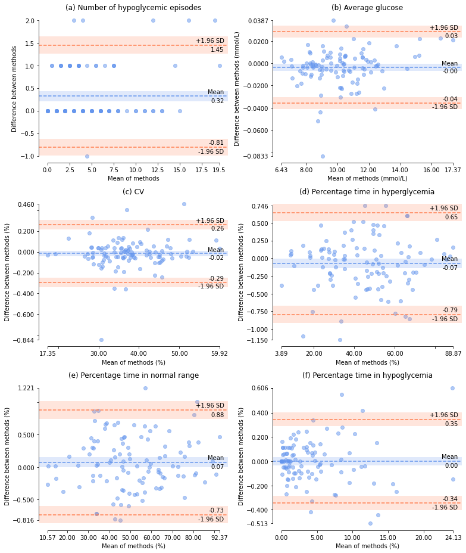

3. Comparing metrics of glycemic control#
Calculating the other metrics of diabetes control and comparing them.
3.1. Import packages and upload data#
import pandas as pd
import matplotlib.pyplot as plt
import copy
import sys
import pyCompare
sys.path.append("/Users/cr591/OneDrive - University of Exeter/Desktop/diametrics/diametrics")
import metrics as cgm
pd.set_option('display.max_rows', None)
pd.set_option('display.max_columns', None)
%matplotlib inline
#df = pd.read_csv('~/OneDrive - University of Exeter/Desktop/PhD/Projects/interpolation-for-hypo-detection/dexcom-maths-exploration/data/tidy_data/interp_dataset.csv')
df = pd.read_csv('interp_dataset.csv')
df.dropna(subset=['glc'], inplace=True)
# Combine baseline and 6-month periods for those who have both by selecting only the ID
df_2weeks = copy.copy(df)
#df_2weeks['ID'] = df['ID'].apply(lambda x: x[:4])
3.2. Diabetes metrics for each person for each interpolation method#
# Interpolation methods
methods = ['glc', 'cut_glc', 'pchip', 'linear', 'cubicspline', 'akima',
'polynomial_3', 'polynomial_5', 'polynomial_7', 'matern', 'rq', 'rbf']
# Dictionary for results
results_dict = {}
# Loop through all of the columns and calculate all diabetes metrics
for method in methods:
sub_df = df_2weeks[['time', 'ID', method]]
sub_df.columns = ['time', 'ID', 'glc']
# cut_glc is 15 min intervals, the rest are 5
if method == 'cut_glc':
interval_size = 15
else:
interval_size = 5
# Add the results to the dictionary with method name as key
results_dict[method] = cgm.all_metrics(sub_df, 'time', 'glc', 'ID',
interval_size=interval_size)
# Diabetes metrics for 5-minute data for each person
results_dict['glc'].round(2).sort_values('ID')
| ID | TIR_lv2_hypo | TIR_lv1_hypo | TIR_hypo | TIR_norm | TIR_hyper | TIR_lv1_hyper | TIR_lv2_hyper | number_hypos | avg_length_of_hypo | total_time_in_hypos | number_lv1_hypos | number_lv2_hypos | sd | cv | minimum_glucose | maximum_glucose | average_glucose | mage_mean | ea1c | percent_missing | |
|---|---|---|---|---|---|---|---|---|---|---|---|---|---|---|---|---|---|---|---|---|---|
| 104 | 1003_6months | 2.32 | 6.05 | 8.37 | 51.69 | 39.94 | 23.85 | 16.09 | 9 | 88.33 | 795.0 | 6 | 3 | 4.57 | 47.72 | 2.22 | 22.20 | 9.57 | 9.40 | 7.65 | 0.35 |
| 7 | 1003_baseline | 2.44 | 9.76 | 12.20 | 57.06 | 30.74 | 22.51 | 8.23 | 10 | 112.50 | 1125.0 | 5 | 5 | 3.95 | 46.87 | 2.22 | 20.09 | 8.43 | 8.35 | 6.93 | 1.01 |
| 22 | 1004_6months | 1.13 | 0.59 | 1.72 | 48.76 | 49.52 | 38.09 | 11.42 | 3 | 48.33 | 145.0 | 0 | 3 | 3.03 | 29.93 | 2.22 | 20.14 | 10.13 | 7.44 | 8.00 | 3.28 |
| 3 | 1004_baseline | 1.42 | 2.84 | 4.26 | 33.26 | 62.48 | 16.82 | 45.66 | 6 | 55.00 | 330.0 | 4 | 2 | 5.66 | 43.72 | 2.22 | 22.20 | 12.95 | 13.36 | 9.78 | 4.18 |
| 4 | 1005_6months | 0.00 | 0.70 | 0.70 | 34.49 | 64.80 | 24.62 | 40.18 | 2 | 27.50 | 55.0 | 2 | 0 | 4.91 | 39.09 | 3.50 | 22.20 | 12.57 | 13.08 | 9.53 | 0.05 |
| 49 | 1007_baseline | 0.00 | 1.02 | 1.02 | 45.98 | 53.00 | 25.41 | 27.60 | 2 | 27.50 | 55.0 | 2 | 0 | 4.52 | 41.85 | 3.33 | 22.20 | 10.80 | 10.28 | 8.42 | 0.45 |
| 100 | 1008_baseline | 7.04 | 8.53 | 15.56 | 58.35 | 26.09 | 19.47 | 6.63 | 17 | 84.71 | 1440.0 | 11 | 6 | 4.09 | 52.55 | 2.22 | 22.20 | 7.79 | 8.98 | 6.53 | 2.05 |
| 94 | 1010_6months | 3.94 | 5.55 | 9.49 | 66.48 | 24.03 | 22.36 | 1.67 | 13 | 65.00 | 845.0 | 4 | 9 | 2.84 | 36.40 | 2.22 | 16.70 | 7.80 | 6.13 | 6.54 | 0.20 |
| 19 | 1010_baseline | 2.73 | 10.60 | 13.33 | 77.99 | 8.68 | 8.38 | 0.30 | 20 | 59.50 | 1190.0 | 15 | 5 | 2.32 | 36.09 | 2.22 | 15.37 | 6.44 | 5.55 | 5.68 | 0.40 |
| 6 | 1011_baseline | 0.00 | 0.28 | 0.28 | 33.41 | 66.31 | 39.78 | 26.52 | 1 | 20.00 | 20.0 | 1 | 0 | 3.47 | 29.90 | 3.39 | 22.20 | 11.60 | 8.66 | 8.92 | 1.57 |
| 15 | 1012_6months | 0.00 | 0.00 | 0.00 | 14.36 | 85.64 | 21.67 | 63.96 | 0 | 0.00 | 0.0 | 0 | 0 | 4.07 | 27.22 | 6.22 | 22.20 | 14.95 | 9.36 | 11.03 | 0.04 |
| 14 | 1012_baseline | 0.00 | 0.00 | 0.00 | 33.28 | 66.72 | 36.43 | 30.29 | 0 | 0.00 | 0.0 | 0 | 0 | 3.69 | 30.87 | 4.61 | 22.20 | 11.95 | 8.47 | 9.14 | 0.86 |
| 99 | 1013_6months | 4.55 | 6.67 | 11.22 | 58.95 | 29.83 | 21.20 | 8.63 | 13 | 78.85 | 1025.0 | 8 | 5 | 3.99 | 48.21 | 2.22 | 22.20 | 8.27 | 8.73 | 6.83 | 2.21 |
| 96 | 1013_baseline | 1.71 | 4.39 | 6.10 | 63.41 | 30.49 | 19.05 | 11.44 | 7 | 77.86 | 545.0 | 4 | 3 | 3.97 | 44.86 | 2.22 | 20.37 | 8.85 | 10.90 | 7.20 | 0.20 |
| 95 | 1014_6months | 1.99 | 1.64 | 3.63 | 41.56 | 54.81 | 32.36 | 22.44 | 4 | 80.00 | 320.0 | 1 | 3 | 4.40 | 40.20 | 2.22 | 22.20 | 10.95 | 11.34 | 8.51 | 1.05 |
| 57 | 1014_baseline | 3.45 | 10.04 | 13.49 | 45.01 | 41.51 | 29.33 | 12.18 | 12 | 105.83 | 1270.0 | 7 | 5 | 4.19 | 45.89 | 2.22 | 21.86 | 9.12 | 10.80 | 7.37 | 3.87 |
| 17 | 1015_baseline | 1.57 | 0.15 | 1.72 | 42.32 | 55.97 | 25.83 | 30.13 | 1 | 165.00 | 165.0 | 0 | 1 | 4.82 | 41.82 | 2.22 | 22.20 | 11.52 | 11.82 | 8.88 | 0.40 |
| 73 | 1019_baseline | 0.00 | 0.21 | 0.21 | 85.17 | 14.62 | 12.29 | 2.33 | 0 | 0.00 | 0.0 | 0 | 0 | 2.29 | 28.48 | 3.72 | 16.65 | 8.03 | 5.25 | 6.68 | 3.03 |
| 68 | 1020_baseline | 2.05 | 6.72 | 8.77 | 63.59 | 27.64 | 18.72 | 8.92 | 8 | 104.38 | 835.0 | 4 | 4 | 3.55 | 42.65 | 2.22 | 19.81 | 8.33 | 9.35 | 6.87 | 1.66 |
| 27 | 1021_6months | 0.06 | 0.61 | 0.67 | 33.07 | 66.26 | 34.05 | 32.21 | 2 | 20.00 | 40.0 | 2 | 0 | 3.93 | 32.69 | 2.89 | 22.20 | 12.01 | 9.71 | 9.18 | 2.15 |
| 93 | 1021_baseline | 0.00 | 0.40 | 0.40 | 25.11 | 74.49 | 45.98 | 28.51 | 1 | 30.00 | 30.0 | 1 | 0 | 3.43 | 28.29 | 3.61 | 22.20 | 12.12 | 7.54 | 9.25 | 11.36 |
| 1 | 1022_baseline | 0.90 | 2.46 | 3.37 | 68.73 | 27.90 | 21.72 | 6.18 | 5 | 63.00 | 315.0 | 3 | 2 | 3.12 | 35.57 | 2.22 | 21.48 | 8.78 | 8.20 | 7.15 | 0.14 |
| 92 | 1024_6months | 0.00 | 0.00 | 0.00 | 72.71 | 27.29 | 23.13 | 4.15 | 0 | 0.00 | 0.0 | 0 | 0 | 2.73 | 30.30 | 4.22 | 22.09 | 9.01 | 5.98 | 7.30 | 3.65 |
| 103 | 1024_baseline | 0.50 | 1.44 | 1.94 | 51.97 | 46.09 | 31.20 | 14.88 | 3 | 48.33 | 145.0 | 2 | 1 | 3.26 | 31.41 | 2.22 | 22.20 | 10.39 | 7.70 | 8.16 | 9.31 |
| 65 | 1025_6months | 0.00 | 0.00 | 0.00 | 55.43 | 44.57 | 31.34 | 13.23 | 0 | 0.00 | 0.0 | 0 | 0 | 2.93 | 28.58 | 4.50 | 19.42 | 10.25 | 6.78 | 8.08 | 3.92 |
| 12 | 1025_baseline | 0.00 | 0.42 | 0.42 | 80.71 | 18.87 | 14.84 | 4.03 | 1 | 25.00 | 25.0 | 1 | 0 | 2.41 | 28.58 | 3.11 | 18.59 | 8.45 | 6.43 | 6.94 | 1.72 |
| 71 | 1026_6months | 0.22 | 0.90 | 1.12 | 42.66 | 56.22 | 36.27 | 19.96 | 1 | 100.00 | 100.0 | 0 | 1 | 4.06 | 36.23 | 2.94 | 22.20 | 11.21 | 9.34 | 8.68 | 9.40 |
| 20 | 1026_baseline | 0.91 | 1.55 | 2.45 | 56.48 | 41.07 | 19.68 | 21.39 | 3 | 71.67 | 215.0 | 1 | 2 | 4.47 | 43.88 | 2.55 | 22.20 | 10.18 | 10.22 | 8.03 | 4.28 |
| 28 | 1027_6months | 0.00 | 0.56 | 0.56 | 31.99 | 67.45 | 35.21 | 32.24 | 2 | 25.00 | 50.0 | 2 | 0 | 3.84 | 31.63 | 3.27 | 22.20 | 12.14 | 8.57 | 9.26 | 0.76 |
| 79 | 1027_baseline | 0.00 | 0.83 | 0.83 | 54.15 | 45.03 | 28.45 | 16.58 | 1 | 60.00 | 60.0 | 1 | 0 | 3.60 | 35.93 | 3.22 | 22.09 | 10.01 | 7.41 | 7.92 | 3.02 |
| 36 | 1029_6months | 0.98 | 2.22 | 3.20 | 45.25 | 51.55 | 35.60 | 15.94 | 4 | 67.50 | 270.0 | 3 | 1 | 3.86 | 37.46 | 2.22 | 22.20 | 10.31 | 9.36 | 8.11 | 2.51 |
| 18 | 1029_baseline | 0.00 | 0.28 | 0.28 | 33.41 | 66.31 | 39.78 | 26.52 | 1 | 20.00 | 20.0 | 1 | 0 | 3.47 | 29.90 | 3.39 | 22.20 | 11.60 | 8.66 | 8.92 | 1.57 |
| 43 | 1030_baseline | 0.22 | 0.39 | 0.62 | 10.43 | 88.95 | 10.21 | 78.74 | 2 | 22.50 | 45.0 | 1 | 1 | 4.99 | 28.70 | 2.22 | 22.20 | 17.38 | 10.04 | 12.56 | 9.72 |
| 72 | 1031_6months | 0.27 | 0.54 | 0.81 | 75.64 | 23.55 | 16.71 | 6.83 | 1 | 35.00 | 35.0 | 0 | 1 | 3.10 | 35.98 | 2.39 | 19.42 | 8.61 | 6.55 | 7.04 | 0.20 |
| 88 | 1031_baseline | 0.00 | 0.55 | 0.55 | 75.98 | 23.47 | 21.28 | 2.20 | 0 | 0.00 | 0.0 | 0 | 0 | 2.57 | 31.23 | 3.66 | 16.32 | 8.23 | 5.80 | 6.80 | 0.48 |
| 13 | 1032_6months | 0.23 | 0.63 | 0.87 | 20.88 | 78.26 | 23.70 | 54.56 | 2 | 32.50 | 65.0 | 1 | 1 | 5.02 | 34.74 | 2.66 | 22.20 | 14.44 | 12.80 | 10.71 | 12.20 |
| 25 | 1032_baseline | 0.61 | 0.98 | 1.60 | 10.99 | 87.42 | 13.87 | 73.54 | 4 | 28.75 | 115.0 | 2 | 2 | 5.07 | 30.58 | 2.22 | 22.20 | 16.57 | 11.11 | 12.05 | 16.11 |
| 30 | 1034_6months | 1.35 | 5.96 | 7.31 | 82.51 | 10.18 | 10.18 | 0.00 | 8 | 75.62 | 605.0 | 6 | 2 | 2.18 | 30.76 | 2.22 | 13.37 | 7.10 | 5.11 | 6.09 | 0.04 |
| 24 | 1034_baseline | 0.51 | 3.19 | 3.70 | 92.60 | 3.70 | 3.70 | 0.00 | 6 | 47.50 | 285.0 | 4 | 2 | 1.75 | 26.54 | 2.44 | 12.21 | 6.58 | 4.53 | 5.77 | 0.74 |
| 29 | 1035_6months | 0.15 | 1.39 | 1.54 | 46.53 | 51.93 | 32.08 | 19.85 | 3 | 51.67 | 155.0 | 3 | 0 | 3.80 | 36.13 | 2.83 | 22.20 | 10.51 | 9.45 | 8.24 | 2.02 |
| 90 | 1035_baseline | 0.20 | 3.60 | 3.80 | 42.17 | 54.03 | 32.18 | 21.84 | 5 | 70.00 | 350.0 | 4 | 1 | 3.76 | 36.25 | 2.94 | 20.59 | 10.38 | 10.54 | 8.15 | 1.14 |
| 75 | 1040_6months | 2.72 | 6.86 | 9.59 | 44.80 | 45.61 | 27.40 | 18.21 | 15 | 57.67 | 865.0 | 8 | 7 | 4.36 | 45.64 | 2.22 | 22.20 | 9.56 | 11.96 | 7.64 | 0.30 |
| 83 | 1040_baseline | 0.35 | 0.85 | 1.21 | 31.98 | 66.82 | 40.52 | 26.29 | 2 | 42.50 | 85.0 | 1 | 1 | 4.22 | 36.38 | 2.55 | 22.20 | 11.59 | 10.84 | 8.92 | 0.00 |
| 56 | 1042_baseline | 2.07 | 3.32 | 5.39 | 47.20 | 47.41 | 22.02 | 25.39 | 6 | 78.33 | 470.0 | 4 | 2 | 4.73 | 45.18 | 2.22 | 22.09 | 10.46 | 11.01 | 8.21 | 2.42 |
| 44 | 1045_6months | 0.64 | 1.18 | 1.82 | 25.58 | 72.61 | 20.92 | 51.69 | 3 | 51.67 | 155.0 | 1 | 2 | 5.35 | 38.80 | 2.22 | 22.20 | 13.78 | 11.97 | 10.29 | 3.00 |
| 61 | 1045_baseline | 0.06 | 1.32 | 1.38 | 31.94 | 66.69 | 25.06 | 41.63 | 2 | 50.00 | 100.0 | 2 | 0 | 4.85 | 37.71 | 2.83 | 22.20 | 12.85 | 13.03 | 9.71 | 13.66 |
| 50 | 1046_6months | 2.55 | 2.15 | 4.69 | 45.74 | 49.56 | 39.97 | 9.59 | 3 | 225.00 | 675.0 | 2 | 1 | 3.29 | 33.66 | 2.22 | 18.20 | 9.77 | 8.19 | 7.77 | 23.89 |
| 48 | 1046_baseline | 2.76 | 1.35 | 4.11 | 38.43 | 57.46 | 35.28 | 22.17 | 4 | 83.75 | 335.0 | 1 | 3 | 3.97 | 36.46 | 2.22 | 22.20 | 10.88 | 7.75 | 8.47 | 20.45 |
| 81 | 1047_6months | 0.27 | 0.98 | 1.25 | 17.88 | 80.88 | 18.15 | 62.73 | 2 | 47.50 | 95.0 | 1 | 1 | 5.29 | 34.82 | 2.44 | 22.20 | 15.18 | 13.13 | 11.18 | 7.24 |
| 51 | 1047_baseline | 0.00 | 1.03 | 1.03 | 14.55 | 84.42 | 23.58 | 60.84 | 2 | 52.50 | 105.0 | 2 | 0 | 4.85 | 31.84 | 3.39 | 22.20 | 15.24 | 12.56 | 11.22 | 2.42 |
| 64 | 1048_6months | 1.97 | 3.54 | 5.51 | 42.60 | 51.89 | 32.39 | 19.50 | 6 | 86.67 | 520.0 | 4 | 2 | 4.12 | 39.46 | 2.39 | 21.86 | 10.43 | 9.37 | 8.19 | 0.50 |
| 42 | 1048_baseline | 0.81 | 1.17 | 1.99 | 49.59 | 48.42 | 28.67 | 19.76 | 4 | 43.75 | 175.0 | 2 | 2 | 3.87 | 37.11 | 2.22 | 21.09 | 10.43 | 9.93 | 8.19 | 1.06 |
| 2 | 1049_6months | 16.02 | 8.04 | 24.06 | 40.71 | 35.23 | 19.11 | 16.13 | 10 | 218.00 | 2180.0 | 4 | 6 | 5.04 | 59.94 | 2.22 | 22.20 | 8.41 | 11.09 | 6.92 | 0.37 |
| 91 | 1049_baseline | 12.95 | 11.32 | 24.27 | 56.17 | 19.56 | 11.52 | 8.04 | 20 | 114.50 | 2290.0 | 9 | 11 | 4.22 | 59.22 | 2.22 | 22.20 | 7.12 | 11.06 | 6.11 | 1.71 |
| 5 | 1051_6months | 1.50 | 2.14 | 3.65 | 46.31 | 50.05 | 35.64 | 14.40 | 5 | 70.00 | 350.0 | 1 | 4 | 3.74 | 36.74 | 2.33 | 21.37 | 10.17 | 8.21 | 8.03 | 2.79 |
| 32 | 1051_baseline | 2.48 | 2.93 | 5.41 | 55.56 | 39.03 | 29.88 | 9.15 | 7 | 66.43 | 465.0 | 3 | 4 | 3.57 | 38.27 | 2.22 | 22.20 | 9.33 | 8.94 | 7.50 | 0.49 |
| 59 | 2001_baseline | 5.75 | 2.98 | 8.73 | 63.42 | 27.85 | 20.13 | 7.72 | 8 | 100.00 | 800.0 | 4 | 4 | 3.36 | 40.50 | 2.22 | 17.76 | 8.30 | 7.46 | 6.85 | 0.35 |
| 101 | 2003_6months | 0.05 | 0.64 | 0.69 | 81.15 | 18.16 | 16.94 | 1.22 | 2 | 20.00 | 40.0 | 2 | 0 | 2.18 | 27.36 | 2.94 | 15.70 | 7.95 | 5.31 | 6.63 | 4.79 |
| 60 | 2003_baseline | 0.00 | 0.16 | 0.16 | 65.37 | 34.47 | 32.71 | 1.76 | 0 | 0.00 | 0.0 | 0 | 0 | 2.49 | 27.86 | 3.78 | 16.00 | 8.94 | 6.05 | 7.25 | 5.68 |
| 37 | 2004_baseline | 6.86 | 9.20 | 16.06 | 62.30 | 21.64 | 16.62 | 5.02 | 15 | 91.33 | 1370.0 | 9 | 6 | 3.35 | 45.16 | 2.22 | 16.48 | 7.41 | 8.11 | 6.29 | 8.44 |
| 78 | 2005_6months | 0.06 | 0.00 | 0.06 | 48.99 | 50.95 | 30.26 | 20.69 | 0 | 0.00 | 0.0 | 0 | 0 | 3.57 | 32.28 | 2.22 | 21.59 | 11.05 | 8.70 | 8.58 | 8.12 |
| 80 | 2005_baseline | 0.00 | 0.00 | 0.00 | 72.69 | 27.31 | 21.73 | 5.58 | 0 | 0.00 | 0.0 | 0 | 0 | 2.60 | 28.66 | 4.17 | 21.28 | 9.06 | 6.31 | 7.32 | 12.41 |
| 34 | 2008_baseline | 3.33 | 4.16 | 7.48 | 38.88 | 53.64 | 23.02 | 30.61 | 6 | 110.00 | 660.0 | 2 | 4 | 5.30 | 47.94 | 2.22 | 22.20 | 11.06 | 13.84 | 8.58 | 1.54 |
| 102 | 2009_baseline | 0.69 | 2.03 | 2.72 | 44.35 | 52.93 | 35.77 | 17.16 | 6 | 34.17 | 205.0 | 4 | 2 | 3.81 | 37.19 | 2.28 | 22.22 | 10.24 | 9.32 | 8.07 | 5.49 |
| 85 | 2010_baseline | 1.17 | 5.33 | 6.50 | 53.20 | 40.29 | 28.75 | 11.54 | 11 | 53.64 | 590.0 | 8 | 3 | 3.83 | 42.67 | 2.22 | 21.03 | 8.98 | 9.31 | 7.28 | 8.21 |
| 9 | 2011_6months | 0.00 | 0.00 | 0.00 | 59.69 | 40.31 | 40.31 | 0.00 | 0 | 0.00 | 0.0 | 0 | 0 | 1.84 | 19.24 | 4.61 | 13.82 | 9.57 | 4.31 | 7.65 | 1.14 |
| 66 | 2011_baseline | 0.00 | 0.00 | 0.00 | 31.61 | 68.39 | 61.64 | 6.75 | 0 | 0.00 | 0.0 | 0 | 0 | 1.93 | 17.34 | 5.50 | 17.11 | 11.11 | 4.82 | 8.61 | 4.34 |
| 8 | 2012_6months | 0.20 | 1.27 | 1.47 | 80.46 | 18.07 | 13.50 | 4.57 | 2 | 60.00 | 120.0 | 1 | 1 | 2.54 | 30.67 | 2.44 | 18.17 | 8.29 | 7.08 | 6.84 | 0.80 |
| 55 | 2012_baseline | 0.10 | 0.81 | 0.92 | 75.28 | 23.80 | 17.19 | 6.61 | 3 | 21.67 | 65.0 | 3 | 0 | 2.99 | 34.73 | 2.89 | 19.17 | 8.62 | 9.20 | 7.05 | 0.85 |
| 76 | 2013_baseline | 0.15 | 1.56 | 1.71 | 73.94 | 24.34 | 18.25 | 6.10 | 5 | 22.00 | 110.0 | 5 | 0 | 3.08 | 38.20 | 2.77 | 16.87 | 8.08 | 8.12 | 6.71 | 0.24 |
| 69 | 2016_baseline | 1.50 | 3.25 | 4.76 | 33.92 | 61.33 | 28.41 | 32.92 | 3 | 130.00 | 390.0 | 2 | 1 | 4.71 | 40.33 | 2.22 | 22.20 | 11.68 | 11.97 | 8.97 | 9.55 |
| 11 | 2017_6months | 0.00 | 0.30 | 0.30 | 30.66 | 69.03 | 33.38 | 35.65 | 1 | 20.00 | 20.0 | 1 | 0 | 4.23 | 34.26 | 3.11 | 22.22 | 12.35 | 9.94 | 9.40 | 0.00 |
| 58 | 2017_baseline | 0.16 | 1.13 | 1.29 | 49.19 | 49.52 | 40.39 | 9.13 | 3 | 35.00 | 105.0 | 3 | 0 | 3.21 | 32.24 | 2.94 | 20.20 | 9.96 | 7.19 | 7.90 | 5.18 |
| 0 | 2018_baseline | 2.14 | 2.34 | 4.48 | 46.59 | 48.93 | 19.71 | 29.22 | 4 | 73.75 | 295.0 | 2 | 2 | 4.54 | 42.85 | 2.22 | 22.20 | 10.59 | 10.97 | 8.29 | 25.51 |
| 38 | 2019_6months | 0.00 | 0.26 | 0.26 | 35.07 | 64.68 | 42.64 | 22.04 | 0 | 0.00 | 0.0 | 0 | 0 | 3.16 | 28.13 | 3.44 | 22.17 | 11.25 | 8.21 | 8.70 | 1.32 |
| 45 | 2019_baseline | 1.09 | 1.29 | 2.38 | 46.72 | 50.90 | 30.28 | 20.62 | 4 | 51.25 | 205.0 | 2 | 2 | 3.92 | 37.37 | 2.22 | 22.20 | 10.49 | 8.72 | 8.22 | 2.12 |
| 41 | 2020_baseline | 6.52 | 5.20 | 11.72 | 32.50 | 55.78 | 15.13 | 40.65 | 12 | 90.42 | 1085.0 | 3 | 9 | 6.32 | 53.40 | 2.22 | 22.20 | 11.83 | 16.23 | 9.07 | 0.30 |
| 10 | 2023_baseline | 0.00 | 3.56 | 3.56 | 82.32 | 14.12 | 13.08 | 1.04 | 2 | 120.00 | 240.0 | 2 | 0 | 2.38 | 30.95 | 3.00 | 18.65 | 7.68 | 5.87 | 6.46 | 1.34 |
| 97 | 2024_6months | 0.67 | 3.26 | 3.93 | 78.09 | 17.98 | 15.11 | 2.87 | 5 | 57.00 | 285.0 | 4 | 1 | 2.72 | 35.02 | 2.22 | 15.76 | 7.76 | 6.21 | 6.51 | 3.04 |
| 74 | 2024_baseline | 0.65 | 2.08 | 2.73 | 61.89 | 35.37 | 30.02 | 5.35 | 4 | 47.50 | 190.0 | 2 | 2 | 3.09 | 34.15 | 2.22 | 18.81 | 9.05 | 7.84 | 7.32 | 14.96 |
| 84 | 2026_baseline | 0.45 | 2.20 | 2.65 | 45.89 | 51.46 | 21.06 | 30.41 | 4 | 47.50 | 190.0 | 2 | 2 | 5.17 | 45.57 | 2.61 | 22.20 | 11.34 | 13.05 | 8.76 | 19.23 |
| 16 | 2027_6months | 3.88 | 6.53 | 10.41 | 43.50 | 46.09 | 21.03 | 25.06 | 5 | 189.00 | 945.0 | 2 | 3 | 5.27 | 51.66 | 2.22 | 22.20 | 10.21 | 11.28 | 8.05 | 1.63 |
| 62 | 2028_baseline | 2.24 | 2.88 | 5.12 | 59.68 | 35.20 | 24.59 | 10.61 | 4 | 113.75 | 455.0 | 1 | 3 | 3.80 | 42.21 | 2.22 | 21.86 | 9.00 | 9.09 | 7.29 | 5.11 |
| 31 | 2029_6months | 0.00 | 0.80 | 0.80 | 57.73 | 41.47 | 28.70 | 12.77 | 2 | 30.00 | 60.0 | 2 | 0 | 3.62 | 35.72 | 3.50 | 22.20 | 10.15 | 8.57 | 8.01 | 5.67 |
| 21 | 2029_baseline | 0.55 | 4.22 | 4.77 | 70.18 | 25.05 | 19.24 | 5.81 | 7 | 55.00 | 385.0 | 6 | 1 | 3.18 | 38.45 | 2.33 | 19.26 | 8.26 | 8.08 | 6.82 | 1.67 |
| 82 | 2030_6months | 0.78 | 1.32 | 2.10 | 38.18 | 59.71 | 24.95 | 34.76 | 4 | 38.75 | 155.0 | 2 | 2 | 4.76 | 38.56 | 2.22 | 22.20 | 12.35 | 11.35 | 9.40 | 15.84 |
| 47 | 2030_baseline | 3.13 | 2.44 | 5.57 | 40.21 | 54.22 | 25.64 | 28.58 | 6 | 70.83 | 425.0 | 3 | 3 | 5.08 | 44.97 | 2.22 | 22.20 | 11.29 | 12.92 | 8.73 | 10.07 |
| 98 | 2031_6months | 0.00 | 0.00 | 0.00 | 38.58 | 61.42 | 32.60 | 28.82 | 0 | 0.00 | 0.0 | 0 | 0 | 4.33 | 37.24 | 4.00 | 22.20 | 11.63 | 10.47 | 8.95 | 7.92 |
| 77 | 2031_baseline | 0.83 | 3.82 | 4.65 | 48.84 | 46.52 | 21.22 | 25.30 | 7 | 55.71 | 390.0 | 6 | 1 | 4.59 | 45.11 | 2.22 | 21.81 | 10.17 | 10.92 | 8.03 | 1.12 |
| 33 | 2032_6months | 0.30 | 0.76 | 1.06 | 63.89 | 35.05 | 15.58 | 19.47 | 3 | 30.00 | 90.0 | 2 | 1 | 4.52 | 45.69 | 2.22 | 22.20 | 9.90 | 9.06 | 7.86 | 0.05 |
| 89 | 2032_baseline | 0.43 | 3.32 | 3.75 | 66.01 | 30.24 | 12.42 | 17.82 | 4 | 57.50 | 230.0 | 3 | 1 | 4.82 | 51.91 | 2.22 | 22.20 | 9.29 | 9.76 | 7.47 | 2.68 |
| 52 | 2034_baseline | 4.66 | 8.25 | 12.92 | 58.57 | 28.51 | 19.83 | 8.68 | 13 | 88.46 | 1150.0 | 6 | 7 | 4.10 | 50.45 | 2.22 | 22.20 | 8.13 | 9.80 | 6.74 | 3.47 |
| 40 | 2035_baseline | 2.01 | 2.06 | 4.07 | 43.41 | 52.52 | 29.33 | 23.19 | 4 | 96.00 | 384.0 | 3 | 1 | 3.80 | 35.47 | 2.22 | 21.64 | 10.71 | 9.27 | 8.37 | 0.00 |
| 63 | 2036_6months | 0.00 | 0.64 | 0.64 | 90.61 | 8.75 | 8.75 | 0.00 | 1 | 25.00 | 25.0 | 1 | 0 | 1.73 | 22.64 | 3.72 | 12.82 | 7.62 | 4.36 | 6.42 | 4.80 |
| 86 | 2036_baseline | 0.00 | 2.42 | 2.42 | 89.25 | 8.33 | 6.51 | 1.82 | 7 | 29.29 | 205.0 | 7 | 0 | 2.21 | 31.33 | 3.27 | 18.20 | 7.04 | 5.01 | 6.06 | 0.45 |
| 26 | 2038_6months | 2.58 | 4.43 | 7.01 | 47.42 | 45.57 | 18.30 | 27.27 | 11 | 51.36 | 565.0 | 5 | 6 | 5.42 | 52.37 | 2.22 | 22.20 | 10.35 | 12.82 | 8.14 | 2.22 |
| 87 | 2039_baseline | 0.63 | 3.77 | 4.40 | 49.74 | 45.86 | 33.75 | 12.11 | 5 | 79.00 | 395.0 | 4 | 1 | 3.59 | 37.49 | 2.55 | 19.70 | 9.57 | 10.34 | 7.65 | 2.99 |
| 70 | 2040_6months | 0.00 | 0.34 | 0.34 | 34.56 | 65.10 | 29.28 | 35.81 | 1 | 25.00 | 25.0 | 1 | 0 | 4.22 | 33.91 | 3.27 | 22.20 | 12.44 | 9.86 | 9.45 | 3.61 |
| 39 | 2040_baseline | 1.73 | 6.65 | 8.38 | 53.03 | 38.59 | 28.38 | 10.21 | 8 | 105.62 | 845.0 | 5 | 3 | 3.96 | 43.84 | 2.22 | 22.20 | 9.03 | 8.99 | 7.31 | 4.64 |
| 35 | 2041_6months | 0.00 | 1.00 | 1.00 | 64.19 | 34.81 | 25.54 | 9.27 | 2 | 30.00 | 60.0 | 2 | 0 | 3.15 | 33.64 | 3.33 | 20.64 | 9.35 | 7.69 | 7.51 | 4.43 |
| 53 | 2041_baseline | 0.00 | 4.30 | 4.30 | 66.58 | 29.11 | 20.71 | 8.41 | 5 | 81.00 | 405.0 | 5 | 0 | 3.38 | 38.12 | 3.05 | 20.42 | 8.86 | 8.72 | 7.20 | 0.59 |
| 105 | 2042_6months | 0.71 | 1.16 | 1.87 | 27.83 | 70.30 | 34.85 | 35.45 | 4 | 41.25 | 165.0 | 2 | 2 | 4.73 | 37.86 | 2.22 | 22.20 | 12.50 | 10.24 | 9.49 | 0.44 |
| 67 | 2043_6months | 7.78 | 3.81 | 11.58 | 55.32 | 33.09 | 19.64 | 13.46 | 8 | 125.62 | 1005.0 | 5 | 3 | 4.20 | 47.26 | 2.22 | 21.53 | 8.89 | 9.49 | 7.22 | 8.71 |
| 46 | 2043_baseline | 2.09 | 8.03 | 10.12 | 57.76 | 32.12 | 18.96 | 13.16 | 8 | 95.00 | 760.0 | 5 | 3 | 4.48 | 51.37 | 2.22 | 22.20 | 8.71 | 11.62 | 7.11 | 25.38 |
| 23 | 2045_6months | 0.67 | 7.37 | 8.04 | 64.47 | 27.49 | 17.35 | 10.14 | 6 | 115.00 | 690.0 | 5 | 1 | 3.72 | 44.11 | 2.66 | 21.75 | 8.43 | 8.24 | 6.93 | 0.33 |
| 54 | 2045_baseline | 0.15 | 1.41 | 1.56 | 35.37 | 63.07 | 36.32 | 26.75 | 2 | 72.50 | 145.0 | 2 | 0 | 3.96 | 33.90 | 2.33 | 22.20 | 11.69 | 9.66 | 8.98 | 0.14 |
results_dict['glc'].ea1c = (results_dict['glc'].ea1c-2.152)/0.09148
# Statistical overview of diabetes metrics for 5-minute data
results_dict['glc'].describe().round(2)
| TIR_lv2_hypo | TIR_lv1_hypo | TIR_hypo | TIR_norm | TIR_hyper | TIR_lv1_hyper | TIR_lv2_hyper | number_hypos | avg_length_of_hypo | total_time_in_hypos | number_lv1_hypos | number_lv2_hypos | sd | cv | minimum_glucose | maximum_glucose | average_glucose | mage_mean | ea1c | percent_missing | |
|---|---|---|---|---|---|---|---|---|---|---|---|---|---|---|---|---|---|---|---|---|
| count | 106.00 | 106.00 | 106.00 | 106.00 | 106.00 | 106.00 | 106.00 | 106.00 | 106.00 | 106.00 | 106.00 | 106.00 | 106.00 | 106.00 | 106.00 | 106.00 | 106.00 | 106.00 | 106.00 | 106.00 |
| mean | 1.48 | 2.71 | 4.20 | 51.06 | 44.74 | 25.18 | 19.56 | 4.73 | 59.14 | 366.74 | 2.86 | 1.87 | 3.81 | 37.70 | 2.73 | 20.68 | 10.19 | 9.15 | 64.31 | 4.36 |
| std | 2.48 | 2.77 | 4.80 | 18.34 | 19.54 | 9.59 | 16.36 | 4.36 | 44.14 | 442.76 | 2.63 | 2.25 | 0.95 | 7.95 | 0.76 | 2.44 | 2.08 | 2.36 | 14.28 | 5.66 |
| min | 0.00 | 0.00 | 0.00 | 10.43 | 3.70 | 3.70 | 0.00 | 0.00 | 0.00 | 0.00 | 0.00 | 0.00 | 1.73 | 17.34 | 2.22 | 12.21 | 6.44 | 4.31 | 38.52 | 0.00 |
| 25% | 0.00 | 0.64 | 0.82 | 38.47 | 28.66 | 18.98 | 7.80 | 2.00 | 27.81 | 56.25 | 1.00 | 0.00 | 3.17 | 31.68 | 2.22 | 19.88 | 8.64 | 7.72 | 53.70 | 0.52 |
| 50% | 0.62 | 1.55 | 2.44 | 48.92 | 45.97 | 23.78 | 16.11 | 4.00 | 53.07 | 197.50 | 2.00 | 1.00 | 3.85 | 36.60 | 2.25 | 22.20 | 10.16 | 9.24 | 64.13 | 2.18 |
| 75% | 2.04 | 3.80 | 5.48 | 63.55 | 57.15 | 32.16 | 27.51 | 6.00 | 80.75 | 507.50 | 4.00 | 3.00 | 4.51 | 43.50 | 3.10 | 22.20 | 11.33 | 10.83 | 72.17 | 5.16 |
| max | 16.02 | 11.32 | 24.27 | 92.60 | 88.95 | 61.64 | 78.74 | 20.00 | 225.00 | 2290.00 | 15.00 | 11.00 | 6.32 | 59.94 | 6.22 | 22.22 | 17.38 | 16.23 | 113.75 | 25.51 |
4.3. Mean difference for all of the metrics#
Here I calculate the mean difference between the interpolation methods with the original 5-minute data for all of the metrics of diabetes control.
results_dict['glc'].columns
Index(['ID', 'TIR_lv2_hypo', 'TIR_lv1_hypo', 'TIR_hypo', 'TIR_norm',
'TIR_hyper', 'TIR_lv1_hyper', 'TIR_lv2_hyper', 'number_hypos',
'avg_length_of_hypo', 'total_time_in_hypos', 'number_lv1_hypos',
'number_lv2_hypos', 'sd', 'cv', 'minimum_glucose', 'maximum_glucose',
'average_glucose', 'mage_mean', 'ea1c', 'percent_missing'],
dtype='object')
# List of the metrics of diabetes control
metrics = ['TIR_lv2_hypo', 'TIR_lv1_hypo', 'TIR_hypo', 'TIR_norm', 'TIR_hyper',
'TIR_lv1_hyper', 'TIR_lv2_hyper', 'number_hypos', 'number_lv1_hypos',
'number_lv2_hypos', 'sd', 'cv', 'ea1c', 'average_glucose',
'mage_mean']
# Get the interpolation methods from the keys of the dictionary
methods = results_dict.keys()
# Declare list for results
perc_diff_list = []
# For each metric in each method, calculate the mean difference compared to 5-minute data
for method in methods:
for metric in metrics:
diff = results_dict['glc'][metric] - results_dict[method][metric]
mean_diff = diff.mean()
perc_diff_list.append([method, metric, mean_diff])
# Convert to dataframe
perc_diff_df = pd.DataFrame(perc_diff_list, columns = ['method', 'metric', 'mean_diff'])
# Mean difference table
pd.pivot_table(perc_diff_df, index=['method'], columns=['metric'])
| mean_diff | |||||||||||||||
|---|---|---|---|---|---|---|---|---|---|---|---|---|---|---|---|
| metric | TIR_hyper | TIR_hypo | TIR_lv1_hyper | TIR_lv1_hypo | TIR_lv2_hyper | TIR_lv2_hypo | TIR_norm | average_glucose | cv | ea1c | mage_mean | number_hypos | number_lv1_hypos | number_lv2_hypos | sd |
| method | |||||||||||||||
| akima | -0.049443 | 0.074163 | -0.068171 | 0.085566 | 0.018728 | -0.011403 | -0.024720 | -0.001017 | 0.063899 | 56.273469 | -0.005974 | -0.028302 | -0.018868 | -0.009434 | 0.005777 |
| cubicspline | -0.069906 | 0.069820 | -0.075706 | 0.092910 | 0.005800 | -0.023090 | 0.000086 | -0.001048 | 0.028157 | 56.273450 | -0.034853 | -0.056604 | 0.000000 | -0.056604 | 0.002336 |
| cut_glc | -0.073143 | 0.001064 | -0.079584 | -0.006481 | 0.006441 | 0.007545 | 0.072079 | -0.003562 | -0.016730 | 56.271868 | -0.043147 | 0.320755 | 0.132075 | 0.188679 | -0.003617 |
| glc | 0.000000 | 0.000000 | 0.000000 | 0.000000 | 0.000000 | 0.000000 | 0.000000 | 0.000000 | 0.000000 | 0.000000 | 0.000000 | 0.000000 | 0.000000 | 0.000000 | 0.000000 |
| linear | -0.067395 | 0.158806 | -0.119230 | 0.103625 | 0.051835 | 0.055181 | -0.091411 | -0.001030 | 0.200557 | 56.273461 | -0.008218 | 0.122642 | 0.028302 | 0.094340 | 0.019149 |
| matern | 0.047175 | 0.055540 | -0.035152 | 0.092878 | 0.082326 | -0.037338 | -0.102715 | 0.011468 | 0.015301 | 56.281322 | 0.024755 | -0.084906 | -0.028302 | -0.056604 | 0.005702 |
| pchip | -0.054257 | 0.088024 | -0.075739 | 0.087637 | 0.021481 | 0.000387 | -0.033767 | -0.001041 | 0.080393 | 56.273454 | -0.029781 | 0.000000 | -0.009434 | 0.009434 | 0.007371 |
| polynomial_3 | -0.069906 | 0.069820 | -0.075706 | 0.092910 | 0.005800 | -0.023090 | 0.000086 | -0.001048 | 0.028157 | 56.273450 | -0.034853 | -0.056604 | 0.000000 | -0.056604 | 0.002336 |
| polynomial_5 | -0.078953 | 0.068714 | -0.084136 | 0.099394 | 0.005183 | -0.030680 | 0.010239 | -0.001070 | 0.015339 | 56.273436 | -0.045190 | -0.084906 | -0.009434 | -0.075472 | 0.001093 |
| polynomial_7 | -0.086635 | 0.067512 | -0.087231 | 0.101304 | 0.000596 | -0.033793 | 0.019123 | -0.000964 | 0.002729 | 56.273502 | -0.048499 | -0.075472 | 0.000000 | -0.075472 | -0.000125 |
| rbf | -0.076566 | 0.071242 | -0.088923 | 0.102211 | 0.012357 | -0.030969 | 0.005324 | -0.000043 | 0.008068 | 56.274082 | -0.018138 | -0.066038 | -0.009434 | -0.056604 | 0.000748 |
| rq | -0.049614 | 0.137469 | -0.115785 | 0.108464 | 0.066171 | 0.029005 | -0.087855 | 0.000184 | 0.181857 | 56.274225 | -0.002133 | 0.056604 | 0.018868 | 0.037736 | 0.017964 |
4.4. Bland-Altman plots#
Blant-Altman plots show us a more detailed spread than the mean difference alone.
# Create matplotlib figure
fig, ((ax1, ax2), (ax3, ax4), (ax5, ax6)) = plt.subplots(3,2, figsize=(11,13))
# Number of hypoglycaemic episodes
pyCompare.blandAltman(results_dict['glc']['number_hypos'],
results_dict['cut_glc']['number_hypos'], ax=ax1)
ax1.set_title('(a) Number of hypoglycemic episodes')
# Average glucose
pyCompare.blandAltman(results_dict['glc']['average_glucose'],
results_dict['cut_glc']['average_glucose'], ax=ax2)
ax2.set_title('(b) Average glucose')
ax2.set_xlabel('Mean of methods (mmol/L)')
ax2.set_ylabel('Difference between methods (mmol/L)')
# Standard deviation/glycaemic variability
pyCompare.blandAltman(results_dict['glc']['cv'],
results_dict['cut_glc']['cv'], ax=ax3)
ax3.set_title('(c) CV')
ax3.set_xlabel('Mean of methods (%)')
ax3.set_ylabel('Difference between methods (%)')
# Time in range (TIR) hyperglycaemia
pyCompare.blandAltman(results_dict['glc']['TIR_hyper'],
results_dict['cut_glc']['TIR_hyper'], ax=ax4)
ax4.set_title('(d) Percentage time in hyperglycemia')
ax4.set_xlabel('Mean of methods (%)')
ax4.set_ylabel('Difference between methods (%)')
# TIR normal
pyCompare.blandAltman(results_dict['glc']['TIR_norm'],
results_dict['cut_glc']['TIR_norm'], ax=ax5)
ax5.set_title('(e) Percentage time in normal range')
ax5.set_xlabel('Mean of methods (%)')
ax5.set_ylabel('Difference between methods (%)')
# TIR hyperglycaemia
pyCompare.blandAltman(results_dict['glc']['TIR_hypo'],
results_dict['cut_glc']['TIR_hypo'], ax=ax6)
# Set title and save
ax6.set_title('(f) Percentage time in hypoglycemia')
ax6.set_xlabel('Mean of methods (%)')
ax6.set_ylabel('Difference between methods (%)')
fig.tight_layout()
fig.savefig('Fig2.svg')

4.5. Distribution of hypos per person#
# Number of people having more than 10 hypos
(results_dict['glc']['number_hypos']>10).value_counts()
False 94
True 12
Name: number_hypos, dtype: int64
# Number of hypos per trace
results_dict['glc'][['ID', 'number_hypos', 'number_lv1_hypos', 'number_lv2_hypos']]
| ID | number_hypos | number_lv1_hypos | number_lv2_hypos | |
|---|---|---|---|---|
| 0 | 1032_baseline | 4 | 2 | 2 |
| 1 | 2018_baseline | 4 | 2 | 2 |
| 2 | 2031_6months | 0 | 0 | 0 |
| 3 | 1040_6months | 15 | 8 | 7 |
| 4 | 2008_baseline | 6 | 2 | 4 |
| 5 | 1030_baseline | 2 | 1 | 1 |
| 6 | 2028_baseline | 4 | 1 | 3 |
| 7 | 2031_baseline | 7 | 6 | 1 |
| 8 | 2036_6months | 1 | 1 | 0 |
| 9 | 1020_baseline | 8 | 4 | 4 |
| 10 | 1048_baseline | 4 | 2 | 2 |
| 11 | 1042_baseline | 6 | 4 | 2 |
| 12 | 1048_6months | 6 | 4 | 2 |
| 13 | 2030_baseline | 6 | 3 | 3 |
| 14 | 2036_baseline | 7 | 7 | 0 |
| 15 | 2024_6months | 5 | 4 | 1 |
| 16 | 2043_6months | 8 | 5 | 3 |
| 17 | 1046_6months | 3 | 2 | 1 |
| 18 | 2003_baseline | 0 | 0 | 0 |
| 19 | 2030_6months | 4 | 2 | 2 |
| 20 | 1019_baseline | 0 | 0 | 0 |
| 21 | 2019_6months | 0 | 0 | 0 |
| 22 | 2029_6months | 2 | 2 | 0 |
| 23 | 1051_baseline | 7 | 3 | 4 |
| 24 | 1047_baseline | 2 | 2 | 0 |
| 25 | 2017_baseline | 3 | 3 | 0 |
| 26 | 1010_6months | 13 | 4 | 9 |
| 27 | 1049_baseline | 20 | 9 | 11 |
| 28 | 2003_6months | 2 | 2 | 0 |
| 29 | 2042_6months | 4 | 2 | 2 |
| 30 | 2029_baseline | 7 | 6 | 1 |
| 31 | 2041_6months | 2 | 2 | 0 |
| 32 | 2032_baseline | 4 | 3 | 1 |
| 33 | 1003_baseline | 10 | 5 | 5 |
| 34 | 2010_baseline | 11 | 8 | 3 |
| 35 | 2032_6months | 3 | 2 | 1 |
| 36 | 1007_baseline | 2 | 2 | 0 |
| 37 | 2011_baseline | 0 | 0 | 0 |
| 38 | 1026_baseline | 3 | 1 | 2 |
| 39 | 1015_baseline | 1 | 0 | 1 |
| 40 | 1014_baseline | 12 | 7 | 5 |
| 41 | 2040_6months | 1 | 1 | 0 |
| 42 | 1004_6months | 3 | 0 | 3 |
| 43 | 1049_6months | 10 | 4 | 6 |
| 44 | 1026_6months | 1 | 0 | 1 |
| 45 | 1034_baseline | 6 | 4 | 2 |
| 46 | 1024_baseline | 3 | 2 | 1 |
| 47 | 1014_6months | 4 | 1 | 3 |
| 48 | 1011_baseline | 1 | 1 | 0 |
| 49 | 2026_baseline | 4 | 2 | 2 |
| 50 | 1024_6months | 0 | 0 | 0 |
| 51 | 1004_baseline | 6 | 4 | 2 |
| 52 | 1022_baseline | 5 | 3 | 2 |
| 53 | 1051_6months | 5 | 1 | 4 |
| 54 | 1046_baseline | 4 | 1 | 3 |
| 55 | 1045_6months | 3 | 1 | 2 |
| 56 | 2016_baseline | 3 | 2 | 1 |
| 57 | 1025_6months | 0 | 0 | 0 |
| 58 | 2041_baseline | 5 | 5 | 0 |
| 59 | 2004_baseline | 15 | 9 | 6 |
| 60 | 1005_6months | 2 | 2 | 0 |
| 61 | 2012_6months | 2 | 1 | 1 |
| 62 | 2027_6months | 5 | 2 | 3 |
| 63 | 1040_baseline | 2 | 1 | 1 |
| 64 | 2035_baseline | 4 | 3 | 1 |
| 65 | 1035_baseline | 5 | 4 | 1 |
| 66 | 1027_baseline | 1 | 1 | 0 |
| 67 | 2005_baseline | 0 | 0 | 0 |
| 68 | 1045_baseline | 2 | 2 | 0 |
| 69 | 1008_baseline | 17 | 11 | 6 |
| 70 | 2013_baseline | 5 | 5 | 0 |
| 71 | 1047_6months | 2 | 1 | 1 |
| 72 | 2038_6months | 11 | 5 | 6 |
| 73 | 1031_6months | 1 | 0 | 1 |
| 74 | 2001_baseline | 8 | 4 | 4 |
| 75 | 2023_baseline | 2 | 2 | 0 |
| 76 | 1025_baseline | 1 | 1 | 0 |
| 77 | 2017_6months | 1 | 1 | 0 |
| 78 | 1010_baseline | 20 | 15 | 5 |
| 79 | 2039_baseline | 5 | 4 | 1 |
| 80 | 2034_baseline | 13 | 6 | 7 |
| 81 | 2020_baseline | 12 | 3 | 9 |
| 82 | 1029_6months | 4 | 3 | 1 |
| 83 | 2043_baseline | 8 | 5 | 3 |
| 84 | 1035_6months | 3 | 3 | 0 |
| 85 | 2012_baseline | 3 | 3 | 0 |
| 86 | 2045_6months | 6 | 5 | 1 |
| 87 | 1013_6months | 13 | 8 | 5 |
| 88 | 1029_baseline | 1 | 1 | 0 |
| 89 | 1012_baseline | 0 | 0 | 0 |
| 90 | 1027_6months | 2 | 2 | 0 |
| 91 | 2011_6months | 0 | 0 | 0 |
| 92 | 1013_baseline | 7 | 4 | 3 |
| 93 | 1034_6months | 8 | 6 | 2 |
| 94 | 1021_6months | 2 | 2 | 0 |
| 95 | 2045_baseline | 2 | 2 | 0 |
| 96 | 1003_6months | 9 | 6 | 3 |
| 97 | 2009_baseline | 6 | 4 | 2 |
| 98 | 1032_6months | 2 | 1 | 1 |
| 99 | 2005_6months | 0 | 0 | 0 |
| 100 | 1012_6months | 0 | 0 | 0 |
| 101 | 2024_baseline | 4 | 2 | 2 |
| 102 | 2040_baseline | 8 | 5 | 3 |
| 103 | 1021_baseline | 1 | 1 | 0 |
| 104 | 1031_baseline | 0 | 0 | 0 |
| 105 | 2019_baseline | 4 | 2 | 2 |